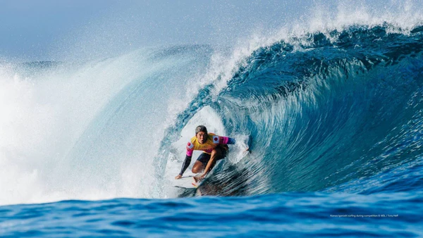
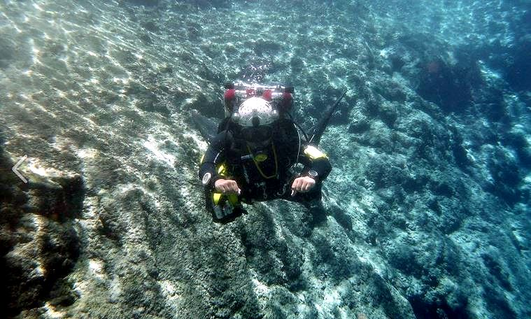
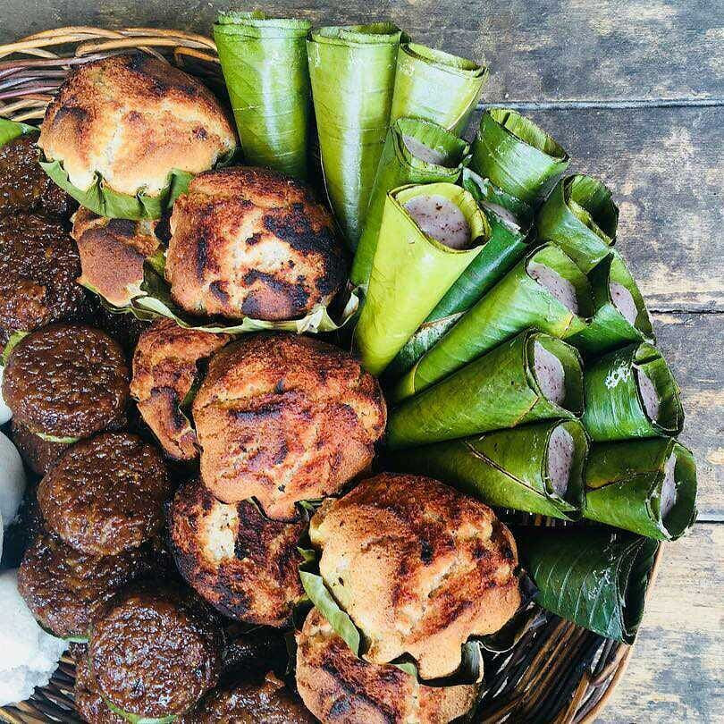

Welcome to Surigao del Sur!
Enjoy the various places and food Surigao del Sur has to offer.
Top Three Things to do in Surigao del Sur

Go for a surfing experience
Lanuza, Surigao del Sur is a great place to go for surfing with waves reaching tall heights perfect for those who like the thrill.

Experience cave-diving like no other
Hinatuan, Surigao del Sur boasts the blue river dubbed "Enchanted" River with various cave systems perfect for cave-diving.

Taste the various delicacies from different kinds of places.
Each town has different kinds of signature desserts and sweets perfect for "pasalubong"